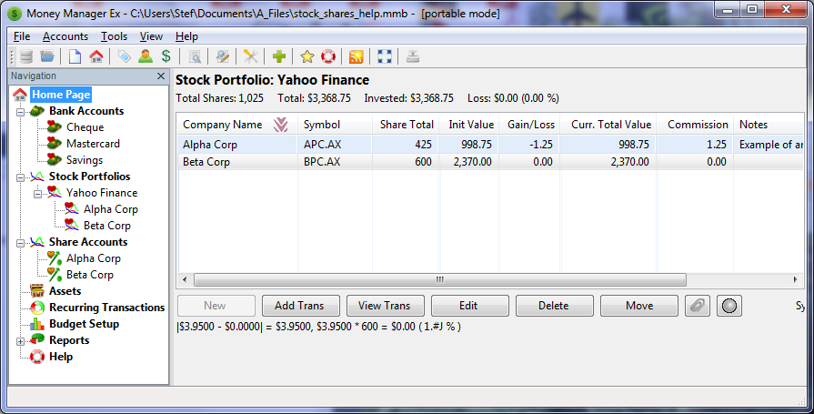
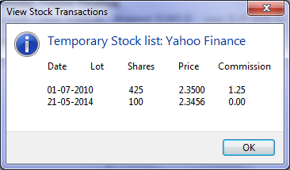
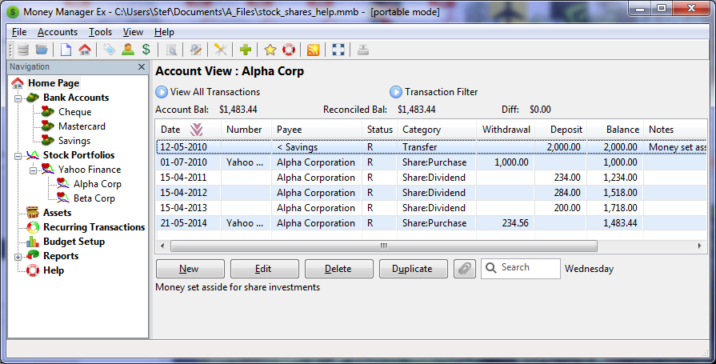

Die Begriffe Aktien und Anteile bedeuten an sich dasselbe, aber je nachdem in welchem Kontext wir diese Begriffe verwenden, können Sie dennoch verschiedene Bedeutungen haben. Hier verweisen wir auf Aktien als Unternehmen und Anteile als Einheiten des Wertes innerhalb des Unternehmens. In der Regel handeln wir Aktien über einen Aktienhändler und kaufen oder verkaufen damit Anteile am jeweiligen Unternehmen.
Die Initialisierung von Aktien und gehaltenen Anteilen ist zunächst ein zweistufiger Prozess.
Nachfolgende Transaktionen mit Aktienbewegungen sind über das angezeigte Unternehmen in der Aktienportfoliosansicht zugänglich.
Jede Transaktion, die mit unseren normalen Konten verbunden ist, erfolgt über die Kontoansicht des zugehörigen Aktienkontos.
Um Aktien und Fonds in MMEX verwenden, müssen wir ein Konto des folgenden Typs erstellen: Aktien.
Die Bezeichnung des Accounts ist normalerweise der Name des Finanzinstituts bei dem das Depot geführt wird.
In unserem Beispiel haben wir den Aktienhändler Yahoo Finanz
genannt.
Dieser Account sollte unter der Überschrift Aktien-Portofolio im Navigationsbaum erscheinen. Wenn wir das Aktien-Portofolio-Menü im Navigationsbaum erweitern, würden wir unser neu erstelltes Aktien-Portofolio sehen.
Bei Auswahl unseren neuen Account Yahoo Finance
öffnet folgende Ansicht: Aktien Portofolio: Yahoo Finance. In dieser Ansicht können wir nun unsere Aktien hinzufügen.
Wir bezeichnen Aktien als die Unternehmen, von denen wir Aktien gekauft haben.
Nehmen wir an, dass wir Aktien in zwei Unternehmen von Aktien kaufen
Broker Yahoo Finance
, wir würden neue Einträge in der Aktien-
Portfolioansicht für unsere Unternehmen erstellen.
Als erster Eintrag für jedes Unternehmen würden wir folgendes bereitstellen:
APCist der Börsencode,
AXist die Börse Börse, um aktuelle Aktienwerte zu erhalten
Speichern dieses Eintrags, das Konto teilen und Teilen Linkage können eingerichtet werden.
Durch die weitere Verwendung dieses Dialogs können wir den Aktienkurs für für diesen Bestand aktualisieren. Wenn zusätzliche Aktien erworben wurden, wirkt sich dieser Preis auf alle Aktien aus.
Jetzt, da wir den ursprünglichen Aktieneintrag erstellt haben, müssen wir eine Buchung zu unserem Aktienbestand hinzufügen, um den ursprünglichen Aktieneintrag zu erstellen. Die Informationen des ursprünglichen Aktieneintrages werden dabei in den neuen Aktieneintrag übernommen.
Hier würden wir zusätzliche Informationen hinzufügen, ähnlich einer normalen Transaktion.
Purchase or sale of shares is achieved by accessing the stock entry in the Stock Portfolio view and adding new transaction.
Here we need to add the share information and control the purchase or sale via the transaction section of the share entry:
Our Stock Portfolio Account now displays a summary of the Stocks we have.
Companies Alpha Corp and Beta Corp maintain their accounts with Yahoo Finance. Here we have hidden various headings as these become meaningless in this view.
Note: Initial share price is not listed in this view. This is because the share price becomes meaningless in a summary view as each purchase will generally have a different share price.
When we have added shares to our account we can see the associated share transactions using the View Transactions
A Share account contain the transactions that are associated with this company stock.
Initially we would set aside money for investment in Stocks and Shares. This is achieved by transferring money from our general accounts to a Share account.
As shares are purchased and dividends received, we can now keep track of our investment over time.
In a transactions, we can also use the company name as a Payee. It is also advisable to create categories of:
Stock list from Portfolio view for our stock:
Accessing our share account, we can add ordinary transactions to our shares account.